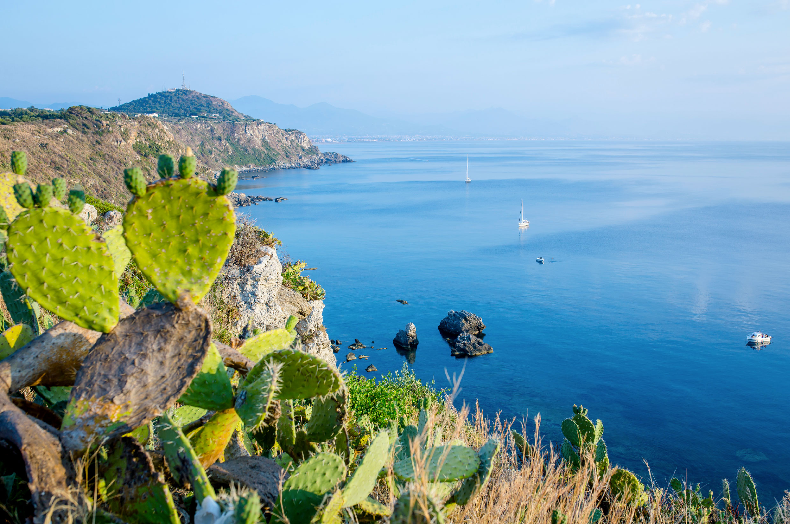

Let's Explore Milazzo Together!
You've made an extraordinary choice in deciding to visit Milazzo, a city that will fascinate you with its millennia of history and breathtaking nature. Milazzo is a true treasure trove of culture, where myth and reality have intertwined since ancient Greek times, leaving traces that still enrich every corner of its territory today.
This is one of the few cities in Sicily able to offer such an extraordinary mix: a unique historical heritage and natural panoramas that leave you breathless. From Milazzo, you can admire a landscape that extends to the famous Aeolian Islands, the "seven nuggets" of the Mediterranean, which seem to emerge from the horizon, testifying to a beauty that has no equal. Milazzo is a place that stimulates the mind and enchants the heart, where every step brings you closer to a new discovery, between the magic of the past and the beauty of an unparalleled natural landscape.
Are you already in Milazzo?

How to Get to Milazzo
Milazzo is easily accessible by train, bus, or car. Here are the updated directions:
By Train
You can take a train to Milazzo from the Messina station. You can check schedules and purchase tickets on the official Trenitalia website: Trenitalia.
Once you arrive at Milazzo train station, there is a direct connection between the train station and the port of Milazzo, which is also the center of the city. The transport is managed by the SAIS company, which operates with line 5. You can find schedules and connection details here: SAIS Schedule - Milazzo Urban Lines.
By Bus
From Messina to Milazzo: There are direct buses connecting Messina to Milazzo, operated by the Giuntabus company. You can check schedules here: Giuntabus - Messina-Milazzo.
From Catania Airport to Milazzo: If you arrive by plane, you can take a bus that connects Catania Airport to Milazzo. For the connection, I recommend checking specific schedules on the website for more details: Airport-Milazzo.
By Car
If you prefer to arrive by car, follow the A20 highway and take the exit for Milazzo. From there, continue on the ring road towards the city center (Viale Sicilia). For parking in the center, you can use the blue-striped parking spaces and manage payment through the EasyPark application. Download the app or visit the website for more information: EasyPark.
Image
Below, an image showing the train heading to Milazzo:

Let's gather some energy
Before starting to discover the wonders of Milazzo, take a moment to recharge your energy with a typical Sicilian breakfast. Although the tradition is decidedly sweet and caloric, the dishes are always plant-based, for a wake-up rich in local flavors. In summer, a true Sicilian would never give up granita with brioche for dipping, but the delights don't end there: cannoli, cassata, and croissants are just some of the delicacies you can taste, perhaps accompanied by a good espresso or a fresh Sicilian orange juice. Sit in a café in the center and let yourself be won over by this sweet start to the day.

Let's Begin
We're ready! This itinerary is designed to offer you a complete experience of our splendid city, letting you discover as much as possible of its natural, historical, and cultural beauties. But there's an additional opportunity: the itinerary is completely customizable, so you can adapt it to your tastes and preferences.
You can choose between two options, both will take you to visit the same wonders, but in a different order:
Itinerary A:
If you decide to start the day at Capo Milazzo, the route will guide you to discover panoramic and natural places, and then continue with other stops in the city. At the end of the day, you'll find yourself enjoying the sunset at Tono Bay.
Itinerary B:
If you prefer to start the day with some relaxation on the beach, the route will start from Tono Bay and then continue towards the other beauties of Milazzo. At the end of the day, you'll admire the sunset from Capo Milazzo, with a spectacular view.
This itinerary is designed to help you discover many wonders, but if you fall particularly in love with a place, don't hesitate to dedicate more time to it or even spend the entire day there. The important thing is that the experience is the one that satisfies you the most. And if you have more than one day available, you can distribute the route at your leisure, to enjoy every corner of Milazzo without rushing.
Your adventure in Milazzo begins now... choose how to start!
How to reach Capo Milazzo
Capo Milazzo: The Natural Wonder Just a Stone's Throw from the Center
Capo Milazzo is the most natural and fascinating area of Milazzo, located a short distance from the urban center. This splendid "gem" is the ideal place for those seeking an experience immersed in nature, while staying close to the city. Here you will find a series of activities and places to explore, among breathtaking panoramas, natural trails, and the possibility of enjoying unique peace, away from the hustle and bustle of the city.
How to get there:
- By bus: You can easily reach Capo Milazzo with the public transport service. The line that connects the port of Milazzo to Capo Milazzo is line 6. You can check the bus schedules through this link to the schedule table. Additionally, if you want to track the bus in real-time, you can use the geolocation of the vehicles through this link to the bus map.
- By car: If you prefer to use your car, reaching Capo Milazzo is simple: just follow the spectacular panoramic road that will lead you directly to the area. Once you arrive, you will find numerous free street parking spaces where you can leave your car and start your adventure.

View Capo Milazzo on Google Maps:
You can view Capo Milazzo on the map by clicking on the following link:
Here we are at Capo Milazzo
Capo Milazzo is the tip of the Milazzo peninsula and is undoubtedly the most natural and fascinating area of the city. A short distance from the center, it offers an experience immersed in nature, while remaining easily accessible.
This promontory marks the meeting point between the two sides of the peninsula and offers breathtaking panoramas, with a view that extends to the seven Aeolian islands. Its lush vegetation is a true treasure of biodiversity, giving life to an ecosystem called "Mediterranean machine" for its extraordinary ability to adapt and thrive. Here, away from the chaos of the city, you can experience complete immersion in nature.
Among the main attractions of Capo Milazzo, you'll find the suggestive Church of Sant'Antonio di Paola, carved into the rock, which offers a spiritual dimension to the landscape. Not far away, there's Gigliopoli, a private villa that, upon request, can be visited to discover a corner of unspoiled and protected nature.
But the true pearl of Capo Milazzo is the Pool of Venus, an enchanting natural inlet, where the crystal-clear sea and the rock merge to create a scene of rare beauty. That's exactly where we're heading.
Excursion to the Pool of Venus
Attention: The path that will take us to the Pool of Venus includes a staircase that might be tiring, especially on the way back. Before undertaking the walk, consider the effort you will face and, most importantly, remember to hydrate, as high temperatures in the area can increase the fatigue of the journey.
Let's now head towards the Pool of Venus, an enchanting natural corner immersed in the heart of the protected marine area. The path is well-marked and well-preserved, crossing an untouched area that has seen an important ecological recovery work. Thanks to the commitment of some volunteers, the Mediterranean machine and marine biodiversity, such as marine flora and corals, have been restored, creating ideal conditions for marine life to flourish and thrive.
Once we arrive, let's be fascinated by the breathtaking panorama surrounding us. We could settle on one of the rocks to enjoy the beauty of the place. If we wish, we can also carefully immerse ourselves in the natural pool, a place where the crystal-clear sea perfectly blends with the surrounding rocks, creating an idyllic environment. It's truly a unique place, a corner of paradise that deserves to be experienced in all its beauty.
View Capo Milazzo on Google Maps:
You can view the Pool of Venus on the map by clicking on the following link:
Let's go back up and enjoy the Panorama
It's time to leave this wonderful natural oasis and start our return. The staircase that led us here might be a bit tiring during the return, especially under the summer heat. Therefore, I advise you to proceed calmly and not forget to hydrate along the way.
Once back on top, let's stop for a moment to savor the breathtaking panorama that Capo Milazzo offers us. The view of the coast and the open sea is truly unique, and we could take advantage of it to take some photos and immortalize this special moment.
When we feel ready, we can continue our journey.
Arriving at the Ancient Village
Continuing our itinerary, we delve into the oldest heart of the city, the historic village, located at the foot of the imposing Castle. This area preserves a timeless charm, with its cobbled streets, stone houses, and a breathtaking view of the sea. Walking through these streets, it's easy to imagine how life must have been centuries ago, when the village was the beating heart of city life. The atmosphere here is a perfect balance between history, tradition, and the tranquility of a place that seems to have stopped in time.
How to get to the village:
By public transport: If you prefer to use public transport, you can take line 6. Here you can find the updated schedule table: Line 6 Schedules. Additionally, the buses are geolocated, so you can always verify their position in real-time: Bus Geolocation.
By car: If you prefer to move by car, you can follow this link for the exact location: Historic Village Location. Regarding parking, it's advisable to be prepared for a slightly longer search, especially during peak hours. However, the best solution is to park in the spaces with blue lines. Parking tickets can be purchased at local tobacconists or, for greater convenience, you can use the Easy Park app: Download Easy Park.
View Ancient Village on Google Maps:
You can view Capo Milazzo on the map by clicking on the following link:
Lunch at the Village
Having arrived at the village of Milazzo, let's be captivated by the unique atmosphere of this ancient and vibrant corner of the city. Although it's the most historic area of Milazzo, the village is anything but sleepy. On the contrary, it's a neighborhood animated by numerous restaurants and cafés where you can taste typical dishes or simply sip a drink. If you want a complete lunch, why not try a dish of the freshest fish, caught directly from the surrounding waters? If instead you want to experience an even more "local" experience, a plate of pasta with a good Sicilian sauce will give you an authentic delight for the palate.
For those who have little time or have brought their lunch with them, there's a special corner worth discovering: a panoramic point that offers a spectacular view. From here, you can admire the Castle of Milazzo from a unique perspective, with a breathtaking view of the beach below and the islands on the horizon. An excellent opportunity for a relaxing break and some tranquility immersed in history. The location of this viewpoint is easily accessible on foot: Panoramic Point.
After having refreshed yourself and appreciated the beauty of the panorama, you'll be ready to resume our itinerary and face the majestic Castle of Milazzo, which we can't wait to explore, to discover together its secrets and its centuries-old history!
Discovering the Castle of Milazzo: between history and breathtaking panoramas
Here we are finally in one of the most fascinating and historically rich places in Milazzo: its Castle. Located on a promontory that dominates the sea and the city, this majestic castle has crossed centuries of history, from the first Greek and Roman settlements to the imposing medieval fortifications.
Over the centuries, the castle has had multiple functions, including defensive fortification, residence of local lords, and prison. It has been the theater of numerous conflicts, including sieges, battles, and invasions, especially during the wars for the control of Sicily. Today, the Castle of Milazzo is an ideal place to immerse yourself in the past, walking among medieval towers, patrol walkways, and spectacular panoramas of the gulf and the Aeolian Islands.
If you wish to delve deeper into the fascinating history of this place, we recommend visiting the official website of the Castle of Milazzo, where you will find further details on its long and varied history, which spans centuries of conquests, battles, and transformations.
Inside the castle, you'll have the opportunity to explore various points of interest. In particular, don't miss the Fortified Citadel, a fascinating example of medieval defensive architecture. Additionally, inside the castle is the Museum of the Sea (MUMA), inaugurated in recent years thanks to the commitment of some passionate volunteers. If you want to discover more details about the history of this museum and its collections, you can visit the official MUMA website.
The castle is an imposing structure, one of the largest in Europe, so take all the time you need to explore it. Normally, a complete visit requires about two hours. At the entrance, you'll find useful information about what to see and how to navigate inside, so as not to miss any detail of this incredible historical monument.
Towards the beach: relaxation and sea views
By this point, it will already be late afternoon, and we will have had the opportunity to discover many fascinating corners of the city, accumulating experiences that we hope will remain in our memories for a long time. But hey, it's not time to stop yet! Rather, I would say it's the perfect time to head towards the beach and enjoy the sea.
On the western side, you'll find Milazzo's most beloved bathing area. Here, crystal clear waters and spacious beaches await you. The beauty of these beaches is that, despite being very popular, they are wide enough to never (almost) seem crowded, so you'll have plenty of space to enjoy the sea in complete comfort.
And while you relax, you'll have before you a sight that's not easily forgotten: the panorama of the sea and the Aeolian Islands. A view that will make you feel as if time has stopped, a corner of paradise that will surely make you appreciate this part of Sicily even more. In short, take a breath, refresh yourself, and prepare to admire one of the most beautiful landscapes this city has to offer!
To reach the western shore, you have various transportation options:
- By bus: take line 6. You can check the timetable and the bus geolocation.
- By car: you can follow this address on Google Maps. For parking, be prepared for a slightly longer search, especially during peak hours. The best solution is to park in spaces with blue stripes. Parking tickets can be purchased at local tobacconists or through the Easy Park app.
View Capo Milazzo on Google Maps:
You can view Capo Milazzo on the map by clicking on the following link:
Baia del Tono
The Western Beach is the ideal place for those seeking tranquility and relaxation, while not giving up the beauty of a breathtaking landscape. Long and spacious, the beach offers numerous spots where you can stop and enjoy the sea. If you prefer to avoid crowds, you can choose any point along the coast, always finding a quiet area to lie in the sun or take a refreshing swim in the crystal-clear waters. However, I recommend continuing to the end of the promenade, where you'll find Baia del Tono, also known as "Ngonia" in Sicilian, a spot that will leave you speechless.
This bay is framed by wild and unspoiled nature, creating an idyllic scene that is perfect for those seeking peace and beauty. The sea here is particularly clear and the waters, which gently slope down, are perfect for swimming or simply walking along the shore. Moreover, this area offers a wide range of services: bars, restaurants, and beach establishments where you can rent sun loungers and umbrellas for greater comfort.
If you enjoy water activities, you can take advantage of local offerings for sports such as kayaking, paddleboarding, or even try some boat excursions. The combination of relaxation and fun opportunities makes Baia del Tono an unmissable stop for visitors to this area.
View Capo Milazzo on Google Maps:
You can view Capo Milazzo on the map by clicking on the following link:
Beach Time
Once we arrive at the shore, let's head towards the part of the beach that we like the most. The Western Beach offers several options, so you can choose whether to set up at one of the beach establishments, where you can rent an umbrella and sun loungers for a day of complete comfort, or, if you prefer a simpler and more natural solution, you can opt for the free beach. In any case, you don't have to worry about finding space, as the beach is wide and welcoming.
As we approach the end of the bay, the scenery becomes even more suggestive. The panorama opens onto crystal clear waters and wild nature that frames the landscape, making every corner a perfect place to enjoy the sea and tranquility. I recommend relaxing a bit on the beach, taking advantage of the cool waters to refresh yourself with a nice swim.
If after some relaxation you still want to explore, I recommend taking a short route that will lead you towards the rocks of the bay. This path offers spectacular views and will allow you to discover hidden corners of the shoreline. Be careful during the excursion among the rocks, as the terrain can be slippery and uneven. You can start the path from this point: click here for the map.
View Capo Milazzo on Google Maps:
You can view Capo Milazzo on the map by clicking on the following link:
Water activities
If you're still feeling adventurous, at one of the beach establishments you can rent a kayak or paddleboard and set off to explore the surroundings. I recommend heading towards the part of the bay that lies behind the promontory visible from the beach. Pass the reef and then turn right, following the coastline from that point onwards.
This area is within Milazzo's marine protected area, a corner of wild and untouched nature, where marine flora is preserved and the water is particularly clear. However, it's important to be cautious and pay attention, as some stretches might be more difficult to navigate and currents stronger.
Plan your route so you don't go too far. Remember that your safety is the priority, so try to measure the time and energy at your disposal. My advice is to think of this activity in a way that doesn't exceed an hour, so you have time to return without rushing before daylight starts to fade. It's not pleasant to be in the water with a kayak or paddleboard when night falls.
Always maintain caution, paying attention to safety, and enjoy the experience.
View Capo Milazzo on Google Maps:
You can view Capo Milazzo on the map by clicking on the following link:
Sunset at Baia del Tono
The time has finally come to experience one of the most beautiful and anticipated spectacles of the day: the sunset. A magical moment, which gives unique emotions every day, transforming the bay into a painting with breathtaking colors.
My personal advice is to enjoy this moment directly by getting comfortable on the sand and letting yourself be enchanted by the natural spectacle that unfolds before you. The sky is tinged with shades of orange, pink, and purple, while the sea reflects every change of light in a fascinating way. If you want to make the experience even more enjoyable, bring something to snack on and a cool drink to sip on. To know the exact time of sunset, you can consult this resource: Sunset Time in Milazzo, so you don't miss even a moment of this enchanting spectacle.
If you prefer a bit more comfort, an alternative is to settle in one of the beach bars. From here, you can enjoy the sunset while sipping an aperitif, as the sun slowly lowers to the horizon. Every minute that passes, the landscape changes, offering new shades and new emotions, while the sky and sea merge in perfect harmony.
This is the opportunity to completely relax, let yourself be enveloped by the serenity of the moment. There's nothing more beautiful than watching the sunset as the sky colors and the sea shines under the light of the last ray of sun.
Enjoy this unique experience, which will stay in your heart, and let yourself be lulled by the timeless beauty of Baia del Tono.
Return to Center
At this point, it's time to think about dinner. You might decide to stay near Baia del Tono and enjoy dinner at one of the restaurants on the beach, taking advantage of the panorama and tranquility that this area offers as the sun sets. However, it might be a good idea to return to the city center, where you'll find a greater variety of restaurants, trattorias, and venues offering typical dishes of Sicilian tradition.
If you prefer some rest before dinner, you could stop by your accommodation to relax a bit and freshen up. Alternatively, if you're ready for dinner, you can head directly to the center, where the lively atmosphere and variety of venues will allow you to taste the flavors of local cuisine, perhaps while sipping a good glass of Sicilian wine.
How to reach the center:
- On foot: If you took public transport and waited until sunset, unfortunately it's likely that there are no more buses available at that time. In this case, you'll have to take a nice walk to return to the center. At least it will be an excellent way to stimulate your appetite and prepare for an abundant dinner, and it will allow you to enjoy the city at night, with a calm and serene atmosphere.
- By car: If you have a car, you can follow the directions to the city center, which is just a few minutes from the bay. However, be prepared for some traffic during peak hours and consider that finding parking might not be easy. The best solution is to look for parking in areas with blue stripes, where you'll easily find an available spot. Arm yourself with patience, and remember that this will allow you to best enjoy the evening in the center. You can conveniently pay for parking using the EasyPark app. Download it from this link: EasyPark App
View Capo Milazzo on Google Maps:
You can view Capo Milazzo on the map by clicking on the following link:
Western Beach
Let's start our journey by dedicating some time to relax on the beach, and then explore the rest of the city. A calm and regenerating start, perfect for energizing before diving into our itinerary.
On the western side, you'll find Milazzo's most beloved bathing area. Here, crystal clear waters and spacious beaches await you. The beauty of these beaches is that, despite being very popular, they are wide enough to never (almost) seem crowded, so you'll have plenty of space to enjoy the sea in complete comfort.
And while you relax, you'll have before you a sight that's not easily forgotten: the panorama of the sea and the Aeolian Islands. A view that will make you feel as if time has stopped, a corner of paradise that will surely make you appreciate this part of Sicily even more. In short, take a breath, refresh yourself, and prepare to admire one of the most beautiful landscapes this city has to offer!
To reach the western shore, you have various transportation options:
- By bus: take line 6. You can check the timetable and the bus geolocation.
- By car: you can follow this address on Google Maps. For parking, be prepared for a slightly longer search, especially during peak hours. The best solution is to park in spaces with blue stripes. Parking tickets can be purchased at local tobacconists or through the Easy Park app.
Baia del Tono
The Western Beach is the ideal place for those seeking tranquility and relaxation, while not giving up the beauty of a breathtaking landscape. Long and spacious, the beach offers numerous spots where you can stop and enjoy the sea. If you prefer to avoid crowds, you can choose any point along the coast, always finding a quiet area to lie in the sun or take a refreshing swim in the crystal-clear waters. However, I recommend continuing to the end of the promenade, where you'll find Baia del Tono, also known as "Ngonia" in Sicilian, a spot that will leave you speechless.
This bay is framed by wild and unspoiled nature, creating an idyllic scene that is perfect for those seeking peace and beauty. The sea here is particularly clear and the waters, which gently slope down, are perfect for swimming or simply walking along the shore. Moreover, this area offers a wide range of services: bars, restaurants, and beach establishments where you can rent sun loungers and umbrellas for greater comfort.
If you enjoy water activities, you can take advantage of local offerings for sports such as kayaking, paddleboarding, or even try some boat excursions. The combination of relaxation and fun opportunities makes Baia del Tono an unmissable stop for visitors to this area.
View Capo Milazzo on Google Maps:
You can view Capo Milazzo on the map by clicking on the following link:
Beach Time
Once we arrive at the shore, let's head to the area of the beach that appeals to us most. The Western Beach offers several options, so you can choose whether to settle in one of the beach resorts, where you can rent an umbrella and loungers for a day of complete comfort, or, if you prefer a simpler and more natural solution, you can opt for the public beach. Either way, you won't have to worry about finding space, as the beach is wide and welcoming.
As we approach the end of the bay, the scenery becomes even more evocative. The panorama opens up to crystal clear waters and wild nature that frames the landscape, making every corner a perfect spot to enjoy the sea and tranquility. I suggest you relax a bit on the beach, taking advantage of the cool waters to refresh yourself with a nice swim.
If after some relaxation you still want to explore, I recommend taking a short path that will lead you towards the rocks of the bay. This route offers spectacular views and will allow you to discover hidden corners of the coastline. Be careful during the excursion among the rocks, as the terrain can be slippery and uneven. You can start the path from this point: click here for the map.
View Cape Milazzo on Google Maps:
You can view Cape Milazzo on the map by clicking on the following link:
Water Activities
If you're in the mood for something more active, at one of the beach resorts you can rent a kayak or paddleboard and set off to explore the surroundings. I recommend heading towards the part of the bay that's behind the promontory you can see from the beach. Pass the reef and then turn right, following the cliff from that point forward.
This area is within the Milazzo marine protected area, a corner of wild and untouched nature, where marine flora is preserved and the water is particularly clear. However, it's important to be cautious and pay attention, as some stretches may be more difficult to navigate and currents stronger.
Plan your route so you don't go too far. Remember that your safety is the priority, so try to measure the time and energy at your disposal. My advice is to think of this activity as not exceeding one hour, maximum two hours, so you have time to return without rushing.
Always maintain caution, paying attention to safety, and enjoy the experience.
View Ancient Borough on Google Maps:
You can view Cape Milazzo on the map by clicking on the following link:
Lunch in Tono Bay
After a morning immersed in crystal-clear waters and under the Sicilian sun, it's time to take a break and recharge your energy. Tono Bay offers several options for a delicious lunch: you can choose among the numerous restaurants and beach resorts that face the beach, where you can taste fresh and typical dishes of Sicilian cuisine, prepared with the best local ingredients. From fresh fish dishes to summer salads, to more substantial plates, there's truly something for everyone.
If you prefer a more informal break that goes straight to the heart of the maritime experience, you can get takeaway food and enjoy it directly on the sand. Imagine sitting under the shade of an umbrella, with the view of the sea stretching to the horizon and the wind caressing your skin, while you savor your lunch with a feeling of complete freedom.
Tono Bay is the ideal place to combine good food and the pleasure of being by the sea, where every moment becomes special. Whether you choose to have lunch in a restaurant or on the beach, relaxation is guaranteed.
Once satisfied and refreshed, we'll be ready to continue our journey, with the necessary energy to discover the wonders that still await us in this splendid city.
To the Ancient Borough
Continuing our itinerary, we'll venture into the oldest heart of the city, the historic borough, located at the foot of the imposing Castle. This area preserves a timeless charm, with its cobbled streets, stone houses, and a breathtaking view of the sea. Walking through these streets, it's easy to imagine how life must have been centuries ago, when the borough was the beating heart of city life. The atmosphere you breathe here is a perfect balance between history, tradition, and the tranquility of a place that seems to have stopped in time.
How to reach the borough:
By public transport: If you prefer to use public transport, you can take line 6. Here you can find the updated timetable: Line 6 Timetable. Additionally, the buses are geolocated, so you can always verify their position in real-time: Bus Geolocation.
By car: If you prefer to move by car, you can follow this link for the exact location: Historic Borough Location. Regarding parking, it's advisable to be prepared for a slightly longer search, especially during peak hours. However, the best solution is to park in spaces with blue stripes. Parking tickets can be purchased at local tobacconists or, for greater convenience, you can use the Easy Park app: Download Easy Park.
View Cape Milazzo on Google Maps:
You can view Cape Milazzo on the map by clicking on the following link:
Here we are in the borough!
Having arrived at the borough of Milazzo, let's be enchanted by the unique atmosphere of this ancient and vibrant corner of the city. Although it's the most historic area of Milazzo, the borough is anything but sleepy. On the contrary, it's a district animated by numerous restaurants and cafes where you can taste typical dishes or simply sip a drink.
Let me take you meanwhile to a panoramic point from which you can admire the Castle of Milazzo from a unique perspective, with also a breathtaking view of the beach below and the islands on the horizon. An excellent opportunity for a relaxing break and some tranquility immersed in history. The location of this viewpoint is easily accessible on foot: Panoramic Point.
After appreciating the beauty of the panorama, you'll be ready to continue our itinerary and to face the majestic Castle of Milazzo, which we can't wait to explore, to discover together its secrets and centuries-old history!
Discovering the Castle of Milazzo: between history and breathtaking views
Here we are finally in one of the most fascinating and historically rich places in Milazzo: its Castle. Located on a promontory that dominates the sea and the city, this majestic castle has crossed centuries of history, from the first Greek and Roman settlements to the imposing medieval fortifications.
Over the centuries, the castle has had multiple functions, including that of defensive fortification, residence of local lords, and prison. It has been the scene of numerous conflicts, including sieges, battles, and invasions, especially during the wars for the control of Sicily. Today, the Castle of Milazzo is an ideal place to immerse yourself in the past, walking among medieval towers, patrol walkways, and spectacular views of the gulf and the Aeolian Islands.
If you wish to deepen your knowledge of the fascinating history of this place, we recommend visiting the official website of the Castle of Milazzo, where you will find further details on its long and varied history, which spans centuries of conquests, battles, and transformations.
Inside the castle, you will have the opportunity to explore various points of interest. In particular, don't miss the Fortified Citadel, a fascinating example of medieval defensive architecture. Additionally, inside the castle is the Museum of the Sea (MUMA), inaugurated in recent years thanks to the commitment of some passionate volunteers. If you want to discover more details about the history of this museum and its collections, you can visit the official MUMA website.
The castle is an imposing structure, one of the largest in Europe, so take all the time you need to explore it. Normally, a complete visit requires about two hours. At the entrance, you will find useful information on what to see and how to navigate inside, so as not to miss any detail of this incredible historical monument.
How to reach Cape Milazzo
Cape Milazzo: The Natural Wonder a Stone's Throw from the Center
Cape Milazzo is the most natural and fascinating area of Milazzo, located a short distance from the urban center. This splendid "gem" is the ideal place for those seeking an experience immersed in nature, while remaining close to the city. Here you will find a series of activities and places to explore, among breathtaking views, natural paths, and the possibility to enjoy unique peace, away from the hustle and bustle of the city.
How to get there:
- By bus: You can easily reach Cape Milazzo with the public transport service. The line that connects the port of Milazzo to Cape Milazzo is line 6. You can check the bus schedules through this link to the timetable. Furthermore, if you want to follow the bus in real-time, you can use the geolocation of the vehicles through this link to the bus map.
- By car: If you prefer to use your car, reaching Cape Milazzo is simple: just follow the spectacular panoramic road that will lead you directly to the area. Once you arrive, you will find numerous free street parking spots where you can leave your car and start your adventure.
View Cape Milazzo on Google Maps:
You can view Cape Milazzo on the map by clicking on the following link:
Here we are at Cape Milazzo
Cape Milazzo is the tip of the Milazzo peninsula and is undoubtedly the most natural and fascinating area of the city. A short distance from the center, it offers an experience immersed in nature, while remaining easily accessible.
This promontory marks the meeting point between the two sides of the peninsula and offers breathtaking views, with a vista that extends to the seven Aeolian Islands. Its lush vegetation is a true treasure trove of biodiversity, giving life to an ecosystem called "Mediterranean machine" for its extraordinary ability to adapt and thrive. Here, away from the chaos of the city, you can experience complete immersion in nature.
Among the main attractions of Cape Milazzo, you'll find the evocative Church of St. Anthony of Paola, carved into the rock, which offers a spiritual dimension to the landscape. Not far away, there's Gigliopoli, a private villa that, upon request, can be visited to discover a corner of untouched and protected nature.
But the true pearl of Cape Milazzo is the Pool of Venus, an enchanting natural inlet, where the crystal-clear sea and the rock blend to create a scenario of rare beauty. That's exactly where we're headed.
Excursion to the Pool of Venus
Attention: The path that will lead us to the Pool of Venus includes a staircase that might be tiring, especially on the way back. Before embarking on the journey, consider the effort you'll have to face and, above all, remember to hydrate, as the high temperatures in the area can increase the fatigue of the route.
Let's now head to the Pool of Venus, an enchanting natural corner immersed in the heart of the protected marine area. The path is well-traced and well-preserved, crossing an untouched area that has seen an important ecological recovery work. Thanks to the commitment of some volunteers, the Mediterranean machine and marine biodiversity, such as marine flora and corals, have been restored, creating ideal conditions for marine life to flourish and thrive.
Once we arrive, let's be captivated by the breathtaking panorama that surrounds us. We could settle on one of the rocks to enjoy the beauty of the place. If we wish, we can also immerse ourselves carefully in the natural pool, a place where the crystal-clear sea blends perfectly with the surrounding rocks, creating an idyllic environment. It's truly a unique place, a corner of paradise that deserves to be experienced in all its beauty.
View Cape Milazzo on Google Maps:
You can view Cape Milazzo on the map by clicking on the following link:
Panoramic View of the Aeolian Islands
It's time to leave this beautiful natural oasis and start our return journey. The staircase that led us here might seem a bit more challenging during the return walk, especially under the summer heat. I advise you to take it slow, allowing yourself breaks to recover energy and, most importantly, remember to stay hydrated along the way.
If you wish, you can stay in the oasis to enjoy the sunset, which will be truly spectacular from this point. However, keep in mind that climbing back in the dark could become more difficult and risky, given the irregular and sometimes uneven nature of the path.
Once back at the top, let's take another break to admire the breathtaking panorama that Capo Milazzo offers us. The view of the coast and the sea stretching to the horizon is truly unique, and gives us emotions that will stay in our hearts. Let's take this moment to capture some photos and immortalize a memory of this landscape, which will accompany us forever.
Sunset at Capo Milazzo
The time has come to enjoy one of the most extraordinary natural spectacles that this splendid land has to offer: the sunset at Capo Milazzo. Immersed in a setting of untouched nature, with the sea stretching out before us and the Aeolian Islands standing out on the horizon, this moment becomes a truly unique and unforgettable experience.
As the sun slowly slips behind the horizon, the sky transforms into a palette of warm and enveloping colors, from golden to pink, through purple and orange. The light reflecting on the sea creates a spectacle of reflections that seems almost magical, giving this corner of Sicily an atmosphere of peace and tranquility that is unmatched.
The Aeolian Islands, silent and mysterious, appear as small floating gems in the distance, while the sound of waves breaking on the cliffs and the sea breeze make the moment even more special. It's a vision that makes you feel small in front of the greatness of nature, but at the same time deeply connected with the world around you.
Stop for a moment, breathe deeply and let yourself be enveloped by the beauty of this sunset, because it is one of those moments that will remain imprinted in your heart and memory, a memory of pure serenity and magnificence.
View Capo Milazzo on Google Maps:
You can view Capo Milazzo on the map by clicking on the following link:
Return to the Center
At this point, it's time to think about dinner. Let's head back to the city center, where you'll find a multitude of restaurants, trattorias, and venues offering typical Sicilian dishes.
If you prefer to rest a bit before dinner, you could stop by your accommodation to relax and freshen up. Alternatively, if you're ready for dinner, you can head directly to the center, where the lively atmosphere and variety of venues will allow you to taste the flavors of local cuisine, perhaps sipping a good glass of Sicilian wine.
How to get to the center:
- On foot: If you took public transport and waited until sunset, unfortunately, it's likely that there are no more buses available at that time. In this case, you'll have to take a nice walk back to the center. At least it will be a great way to stimulate your appetite and prepare for a hearty dinner, and it will allow you to enjoy the city at night, with a calm and serene atmosphere.
- By car: If you have a car, you can follow the signs to the city center, which is just a few minutes from the cape. However, be prepared for some traffic during peak hours and consider that finding parking might not be easy. The best solution is to look for parking in the blue-lined areas, where you'll easily find an available spot. Arm yourself with patience, and remember that this will allow you to better enjoy the evening in the center. You can conveniently pay for parking using the EasyPark app. Download it from this link: EasyPark App
View Capo Milazzo on Google Maps:
You can view Capo Milazzo on the map by clicking on the following link:
Dinner in the Center
Once you arrive in the center, you'll find yourself immersed in a wide choice of restaurants, venues, and bars, offering typical Sicilian dishes, ideal for concluding your day beautifully. If you desire a more relaxed and informal experience, you can opt for an aperitivo dinner: a perfect moment to savor local delicacies accompanied by a good glass of Sicilian wine or a cocktail, perhaps outdoors, enjoying the lively atmosphere of the center.
If you don't feel like a full meal or if you prefer a quicker solution, the center of Milazzo offers several rotisseries where you can grab something on the go. Here you can taste focaccias, stuffed with all kinds of savory delights, or arancini, the famous stuffed and fried rice balls, which represent one of the most typical and beloved dishes of Sicilian tradition. If you want something different, try the pitoni, stuffed calzones filled with fresh and flavorful ingredients, which you can eat even while strolling through the streets of the center.
Additionally, if you prefer a more traditional dinner, you can choose from numerous restaurants that offer dishes based on fresh fish, pasta alla norma, and other typical dishes of Sicilian cuisine. In any case, you can count on the quality of the ingredients and the typicality of the cuisine that represent the true essence of Milazzo.
Milazzo, with its lively center, is the perfect place to savor local cuisine in an informal or elegant setting, depending on your preferences. All in a welcoming framework, where Sicilian tradition and hospitality will make you feel at home.
Walk along the Seafront
After dinner, why not take advantage of the pleasant evening to go for a walk and discover a bit more of the center of Milazzo? It's the perfect time to visit some of the most fascinating places in the city that you might have overlooked during the day.
Start from Piazza del Duomo, one of the most beautiful and central spaces in Milazzo. This square offers a splendid view of the cathedral and its elegant perimeter. It's the heart of the historic center, perfect for a moment of tranquility and to observe the local architecture. You can find the square here: Piazza del Duomo.
Then continue along Via Medici, one of the liveliest streets in the center, flanked by venues, shops, and cafes. Here you can enjoy the animated but welcoming atmosphere that characterizes the heart of the city. Via Medici will also offer you the opportunity to observe some historic buildings and enjoy typical city life. You can follow the route on Google Maps here: Via Medici.
Conclude your walk with a visit to the Lungomare di Levante, also known as Lungomare Garibaldi. It's one of the most suggestive walks in Milazzo, with a panoramic view of the sea that will accompany you as you walk. The seafront is ideal for relaxing and enjoying the evening with the sea breeze. Here you can take a long walk along the coast, savoring the tranquility of the sea. The route can be reached via this link: Lungomare Garibaldi.
This walk will allow you to see Milazzo from a different perspective, more intimate and serene, beautifully concluding your evening in the city.
Ice Cream
After a pleasant evening walk, why not sweeten your evening with a delicious artisanal gelato? Milazzo, with its center full of life, is the ideal place to indulge in this pleasure. Walking through the streets of the center, you'll find numerous bars and gelaterias offering ice cream prepared with fresh and quality ingredients, perfect for satisfying any kind of sweet craving.
Whether you want to enjoy it while continuing to stroll along the streets of Milazzo, enjoying the evening atmosphere of the city, or you prefer to sit and relax in one of the many venues, you'll surely find the option that suits you. Every corner of the center offers a different experience, and good ice cream is the ideal way to end a day full of emotions.
Each gelateria in the center has its unique style, with a wide choice of flavors, from more traditional creams like hazelnut and pistachio, to more innovative and fruity combinations. Artisanal gelato is a true art in Milazzo, and a stop at one of its gelaterias is an experience that will give you not only pleasure for the palate but also a sweet memory of the evening.
If, however, you feel that ice cream is not what you desire at this moment, don't worry! The Sicilian confectionery tradition offers many other delights. You could opt for a Sicilian cannoli, with its crispy wafer filled with fresh ricotta and candied fruit, or for a sweet peach, a typical dessert with a soft custard inside. If you like something richer, a Sicilian cassata, with its ricotta filling, wrapped in sponge cake, royal icing, and candied fruit, could be the dessert for you. Local pastry shops offer an infinite variety of sweets, all perfect for completing your evening beautifully.
Whether you decide to eat ice cream or one of these typical desserts, the center of Milazzo has what you need to satisfy all your sweet cravings, leaving you with a smile on your lips as you conclude your walk.
Bars and Nightlife
If after dinner you feel like extending your evening, Milazzo offers some pleasant options to experience its nighttime atmosphere. You can decide to visit one of the pubs in the center, where you can sip a drink and, sometimes, listen to live music, which helps create a convivial and relaxed environment. It's the ideal place to enjoy the evening in company, perhaps with a chat or simply observing life flowing in the center.
If instead you're in the mood for something more lively, you can check out the events of the evening. Depending on the day of the week, there are outdoor dance parties, both along the Ponente coast and in the Capo Milazzo area. These places are perfect for those who want to have fun and dance under the stars, with the sea breeze making the atmosphere even more suggestive. An ideal opportunity for those seeking an evening of entertainment, among music and movement, in a unique and characteristic setting.
End of Day
We have reached the end of this intense and wonderful day in Milazzo. I hope you had fun and that the experience has left you with positive memories, in fact, I hope it was even memorable! I tried to offer you a rich and varied itinerary, which would allow you to explore the natural, historical, and cultural beauties of the city, but also to savor its unique atmosphere.
My goal was to give you time to enjoy every single moment, from morning until evening, without rushing, to allow you to fully live every experience. Milazzo has much to offer, and even though we've seen a lot today, I assure you there are still many other gems to discover.
If you've had the opportunity to stay for just one day, I hope this itinerary has enticed you to return and explore even more.
I wish you to continue exploring Milazzo and Sicily with the same spirit of curiosity that brought you here today. Don't forget that every corner of this land has something to tell and that every time you return, there will always be something new to discover.
I hope this experience is just the beginning of a beautiful relationship with this land and that you can return soon. Thank you for choosing Milazzo, and have a good continuation in your journey!
A heartfelt thank you for trusting this itinerary. It has been a real pleasure to guide you through the wonders of Milazzo and we hope you can take away beautiful memories of this day. We wish you to return soon and to live even more fantastic experiences in this city and its surroundings.